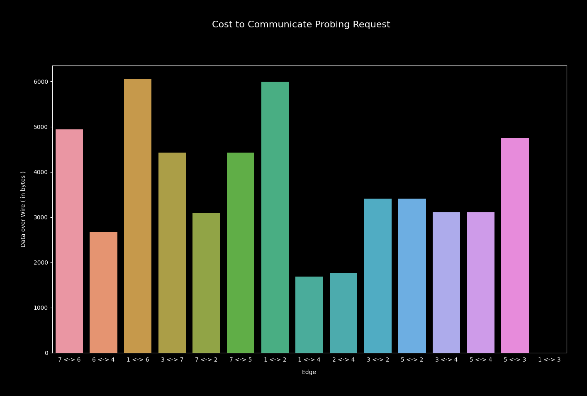
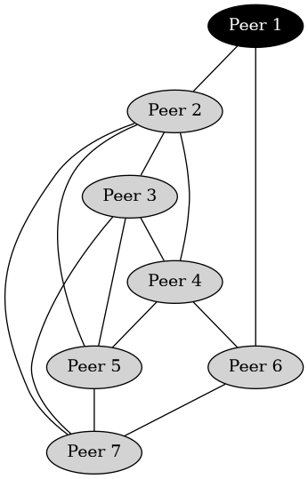
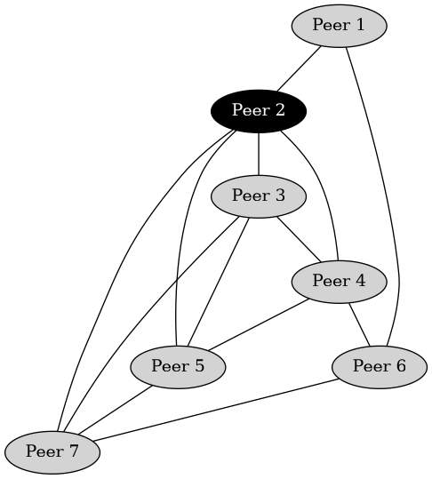
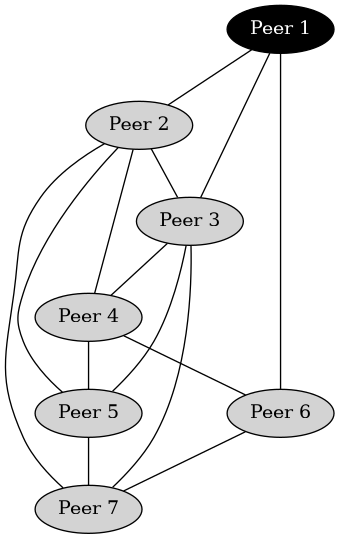
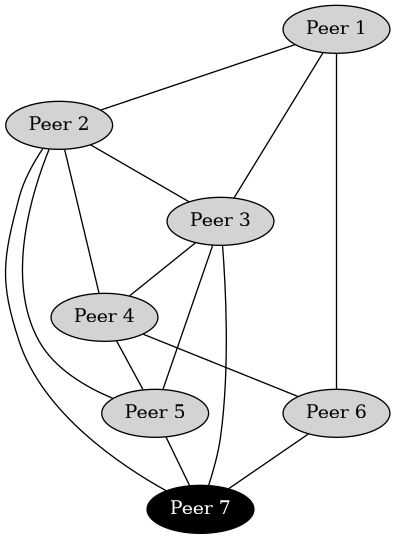
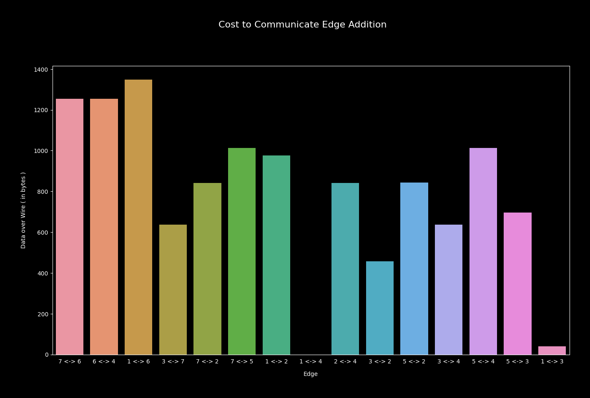

Recently I've been attempting to view world around from p2p node's perspective
i.e. how can a p2p node learn about
global topology of network it's part of. Nodes are aware of neighbourhood
but not how neighbours are themselves stuctured. Node has no idea of
edges existing between a pair of vertices, when it's not one of those. Nodes follow one cooperative
protocol by forwarding messages to peers who hasn't yet seen certain message.
Each peer authors its own message & helps in forwarding peer-authored messages
while playing role of hop. By inspecting message body, node learns
of which hops has helped in forwarding certain message & pictures path in network. A few
of these messages, traversed through different paths, helps in forming substantial portion of network graph.
Last week I wrote about it here.
In previous setting of simulation, network topologies were statically synthesized & small number
of participants collaborated. This week I explore more dynamically generated network
topologies. I also bring in libp2p based nodes into picture. Main goal is to understand
how to tweak the algorithm so that it can adaptively catch changes happening throughout
network, while keeping network wide peer specific topology probings at minimum.
I classify messages passed around by respective purpose. Broadly speaking, there're
three kinds of messages which can be sent across network.
I consider each participant of p2p network as vertex
& each TCP connection between a pair of them as an edge, while picturing
p2p overlay network as graph. P2P networks keep changing
their structure frequently, due to some node going down or network partition
occuring, which is why node's world view should be adapting to those changes.
I name, TCP connection being established between two peers as edge added event,
whereas disconnection of two peers triggers edge removed event. When either
of these two events happen, news is gossiped throughout network. And this allows
existing participants to either add or remove an edge from graph, which it's maintaining locally
as world view.
But some peer who has just joined network may be interested in exploring world
around, so it authors one probe message, which is passed throughout network collecting
trace of hops who cooperated in gossiping, helping every participant to refresh
their world view. And this is what I call, probing.
Probing helps any network participant to learn network topology
while it's not really necessary that everyone probes, rather single peer
probes & everyone learns.
When announcing edge added event, both of peers upon which edge
is incident, authors their own message with kind set to add.
Each incident node sends message to other one, at very first step of
connection establishment, making other side of edge aware of self-identity.
After that each of them shares message with their neighbours,
so that it can be propagated throughout network. Before announcing, peer sets self-id
as other side of edge, denoting edge has been established between two peers; also
appends self as hop of message so that network doesn't send this message back to
this peer again --- reducing cost to some extent.
Similarly when disconnection between two peers occur, edge removed event is propagated. But this time each of those affected nodes, author their own message with kind set to del and puts edge description in terms of ( previously ) incident node identifiers, so that when other participants receive message they can delete this edge from their locally maintained view of network.
Probing specific crafted message carries authorship details, kind set to probe & identifier of hops i.e. trace of path through which message has traversed. That's why inspection of probe message body, helps peer in deciding whom to forward message & picturing a path in network. Over time a peer receives multiple copies of same message traversed via different paths, from its neighbours --- learning of existence of multiple paths in network. Peers follow collaborative gossip protocol & message path is determined by trace in message body, which is updated before forwarding it to next hop.
For running simulation, I set up N-many libp2p nodes, each listening for
incoming connections while each also attempting to establish
connection with M-many randomly chosen peers, essentially
forming a dynamically synthesized nework topology.
During network forming step, each peer follows protocol i.e. announces
edge added message to its local neighbours, which is eventually propagated
throughout network, helping current network participants to learn of existence of
edge between a pair of nodes.
After network forming, one peer attempts to gauge network i.e. broadcasts
probe message to its neighbours, resulting into whole network learning
of message along with path trace, helping them to picture network structure.
In this step all current participants get a full picture of network.
To simulate link failure scenario, one randomly chosen connection
is dropped, which triggers edge removed message being broadcasted
to other neighbours still connected, from both of peers which just got disconnected.
By inspecting this message participants remove edge from graph which they
locally maintain as world view.
At the very end, randomly one connection is established, triggering propagation of
edge added message, letting peers update their world view, by adding new edge
in graph.
Randomly generated simulation setup has 7 nodes & 15 edges, where peer_1
probes, as a result of it everyone pictures whole world. This is how peer_1 sees
world around itself after running probing step.
Now I take a look at how peer_2 sees world around itself, after end of probing round.
And both of peer_1 & peer_2 find similar world view.
When I check remaining nodes world views, I find exact similarity.
I plot collected metrics i.e. data transferred over each edge ( read TCP connection ) for collaborative probing. I see some edges carrying more data compared to others due to presence of important vertices i.e. vertices having >= 3 edges, where they can have at max 6.
I trigger edge disconnection & let disconnection message get propagated throughout network. I find Peer 1 looses connection with Peer 4, so both of them must remove that edge from their local view of network --- which they do.
But interesting part is, does others also capture this change ? For checking that, I snapshot Peer 2's network view at this moment & it also captures change as expected.

During edge disconnection, some messages are passed around network, each edge's contribution
towards its network wide propagation is captured in following cost graph.
After a careful inspection, I see connection Peer 1 <-> Peer 4 & Peer 1 <-> Peer 3
doesn't anyhow contribute to forwarding of edge removed message, which is desired
behaviour because none of these edges exist in graph as of now.
Link between Peer 1 & Peer 4 just got failed, while Peer 1 & Peer 3 is going to
get connected in next step of simulation.
Finally it's time to simulate random connection establishment between a pair of peers. After edge added message passing has stabilised, I take a look at world view of Peer 1, finding existence of new edge between Peer 1 & Peer 3.
For understanding whether Peer 7 has learned of this change in topology, I snapshot its world view at this point of time. As expected all other peers who were not involved in connection establishment ( i.e. none of incident vertices ) has correctly learned change.
Cost analysis shows newly created edge i.e. Peer 1 <-> Peer 3 carrying edge addition message, while Peer 1 <-> Peer 4 doing nothing, because it doesn't exist anymore.

Results of simulation seem promising for dynamically adapting world view to network
state changes. Peers can even colloborate on when to probe, avoiding chances of
simultaneous probing, because if one peer starts probing, all will be benefitting from it.
I keep code used for simulating & generating these findings here.
I note few points for further exploration,